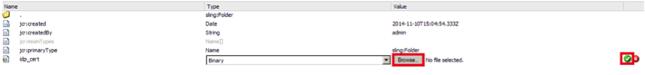
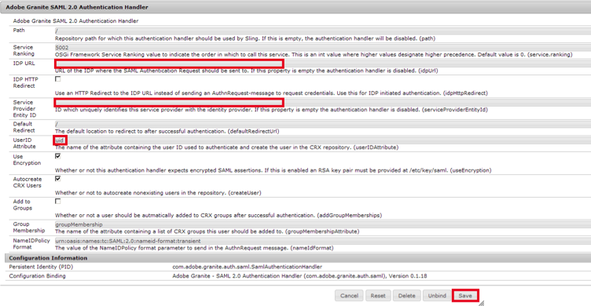

This setup might fail without parameter values that are customized for your organization. Please use the Okta Administrator Dashboard to add an application and view the values that are specific for your organization.
-
Install the Adobe Experience Manager.
- Open the Content Explorer located at yourServer/crx/explorer/browser/index.jsp where yourServer is the name of your server.
-
Under /etc/key in the repository, create a node called saml. Inside this node, add a new binary property called idp_cert that refers to the public certificate of the identity provider, as shown below.

-
Download the Identity Provider Certificate by selecting the link shown below.
Sign into the Okta Admin dashboard to generate this value.
-
Upload it to the certificate field by clicking the Browse button, as shown above.
- Open the Adobe Experience Manager Web Console Configuration located at yourServer/system/console/configMgr where yourServer is the name of your server.
- Configure the Adobe Granite SAML 2.0 Authentication Handler, as shown below.

-
Enter the following IDP URL.
Sign into the Okta Admin dashboard to generate this value.
- Enter the URL of your server for the Service Provider Entity ID.
- Enter uid for the UserID Attribute.
- Select Save.
- Configure the Apache Sling Filter.
- Check the Allow Empty checkbox.
- Enter yourSubDomain.okta.com in Allow Hosts, where yourSubdomain is the name of your subdomain.
- Select Save.
-
Done!
Note: IdP-initiated and SP-initiated flows and Just In Time (JIT) provisioning are all supported. For an SP-initiated flow, use the Service Provider Entity ID URL that you entered in step 7b.